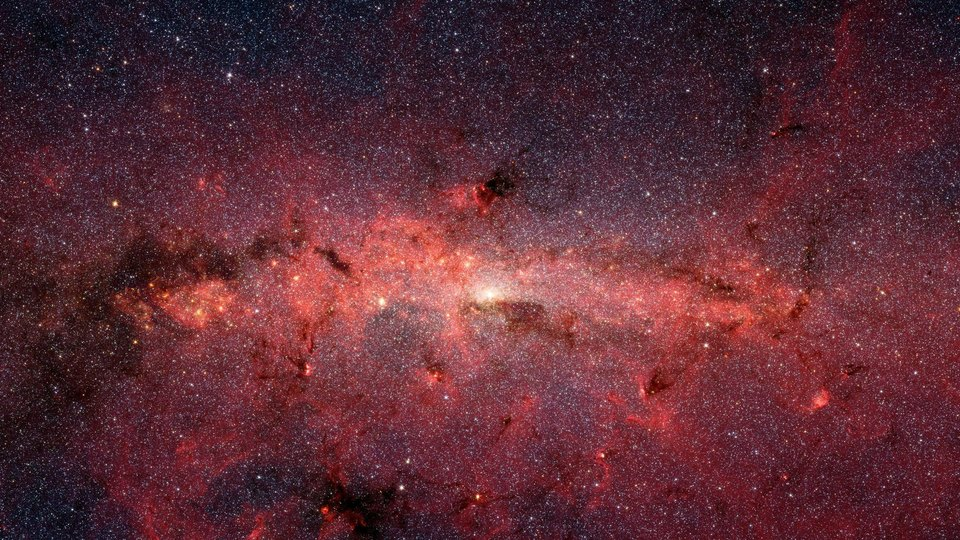
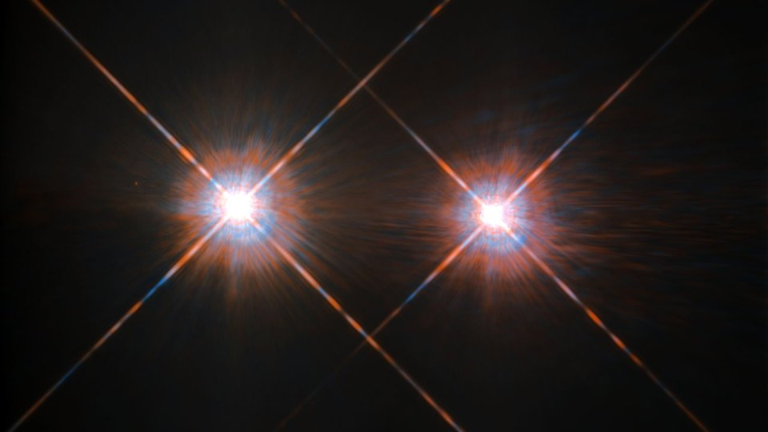
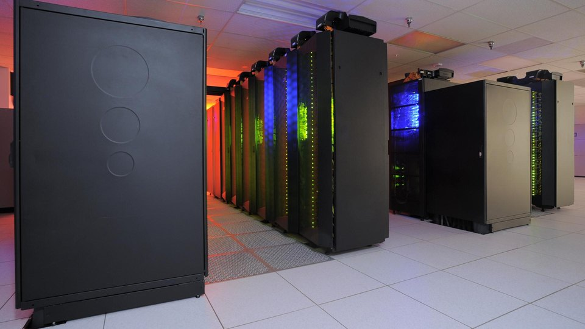
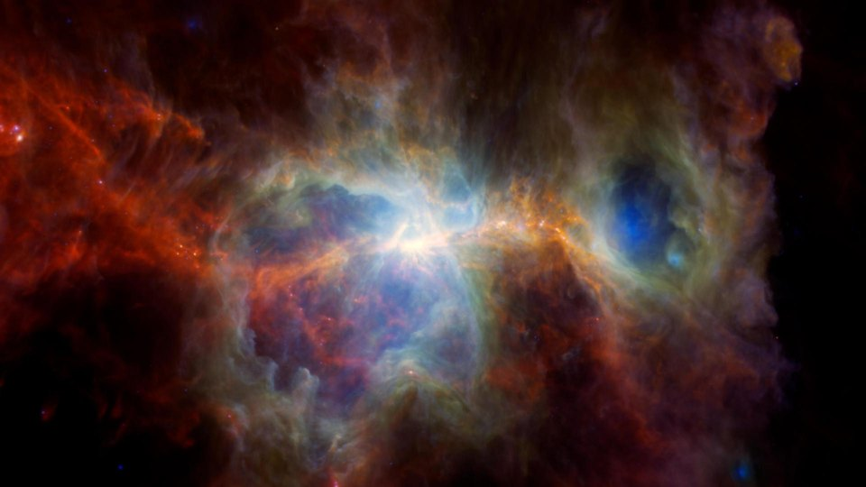
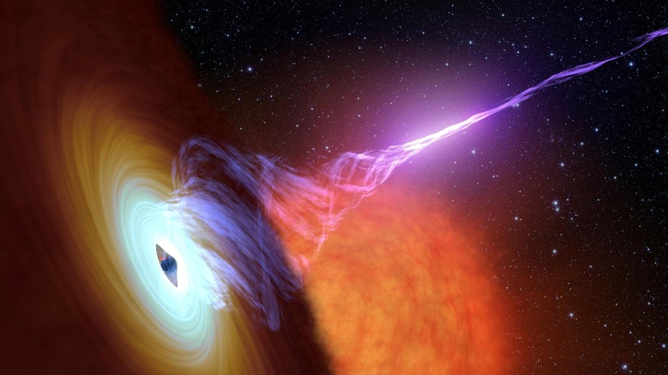

Thumbnails: center of the Milky Way (NASA/JPL-Caltech) · Alpha Centauri A and B (ESA/NASA/Hubble) · Discover supercomputer (NASA/GSFC) · Orion Nebula (ESA/NASA/JPL-Caltech) · black hole with jet, artist's concept (NASA/JPL-Caltech).